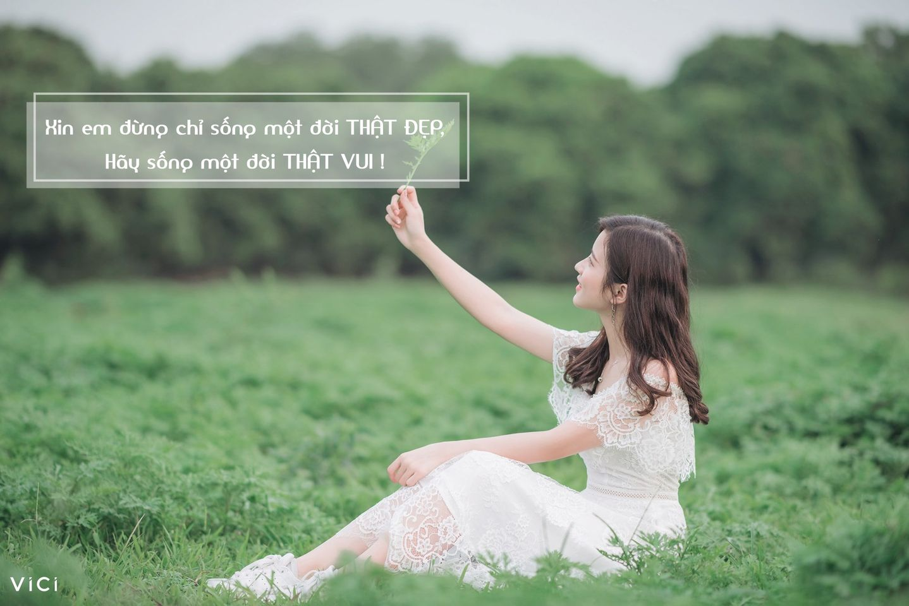

XIN EM ĐỪNG CHỈ SỐNG MỘT ĐỜI THẬT ĐẸP, HÃY SỐNG MỘT ĐỜI, THẬT VUI !By VICI 8 hours agoRồi em sẽ thấy, thì ra mọi thứ ta từng, cả những thành công hay thất bại, cả những tự hào hay tủi hổ ta đã, đều chẳng quan trọng đến vậy trong mắt những người ngoài kia. Một ngày nào đó, tất cả sẽ quên đi thôi. Điểm 0 xấu hổ đầu tiên em nhận, bây giờ có ai còn nhớ không, ngoài em nhỉ? Cô giáo đã quên từ lâu, bố mẹ cũng chẳng thể nhớ nổi, bạn bè thì đến điểm của họ thế nào còn chẳng nhớ nữa là. Lần em bị té ngã ngượng chín mặt trước đám đông ngày xưa, bây giờ không nhắc lại, có ai còn nhớ chứ? Những người cười chê em, có khi còn chẳng biết mặt em trước đó, và sau đó lại càng chẳng nhớ gì, phải không?  Em gồng mình giữa đời này, buồn không được khóc, bực tức không dám tỏ, tất cả giữ lại trong lòng rồi gặm nhấm hằng đêm, cuối cùng được gì, ngoài một trái tim tật nguyền gào thét mong được thấu hiểu? Thế giới sắp có tới 8 tỉ người, nhưng kỳ thật, số người quan tâm thực sự đến em chỉ khoảng một phần một tỉ số đó, và em, hãy sống một đời thật vui, cùng chính em, cùng những người em thương. Đừng mua những bộ đồ chỉ vì diện nó em được khen đẹp, hay mắc tiền, hãy mặc những gì làm em thoải mái, mặc cho em trước, cho người sau. Đừng yêu một cuộc tình “thật đẹp”, “thật nhiều kỉ niệm”, nhưng chỉ để khoe lên facebook, hãy yêu một cách “thật thà”, “thấu hiểu”, “thật lòng”. Dù tình yêu có ồn ào, cả thế giới phải biết đến, hay chuyện tình chỉ bình lặng ấm êm, quan trọng nhất vẫn phải là yêu nhau đã ! Đừng sống một thanh xuân “không hề nuối tiếc”, “oanh liệt ghi dấu” như thiên hạ bắt nhau phải sống, em hãy cứ một tuổi trẻ ý nghĩa với mình, có thể sống hết mình hết người, cũng có thể hi sinh tự do hiện tại vì còn có ước mơ tối hậu cần làm phía trước. Người ta đi phượt ngàn dặm không có nghĩa em cũng phải xách ba lô lên và đi cho cố. Người ta vui chơi thâu đêm suốt sáng nhậu nhẹt tới bến, kệ người ta, mình không thích thì chớ có làm. Đừng tự hành hạ nhịn ăn nhịn uống chỉ để được khen thân hình đẹp, hãy sống thật khỏe mạnh, ăn vì em trước, ăn vì người sau, tập tành vì em muốn mình khỏe đẹp, chứ không phải để được dăm ba lời khen không. Đừng chỉ biết hát những bài hát người khác thích nghe, hãy hát bài ca em vẫn nhẩm trong đầu nhưng chẳng dám hát vì “quê”, vì chẳng hay. Đời người trăm năm, nhưng đời mình biết được bao nhiêu mà để đó, mà bỏ ngỏ tiếng lòng đâu em ? Nếu em sợ, anh sẽ nói lại những lời vẫn hay tự nhủ thôi: Người ta bỏ đi một thứ chỉ vì sợ tương lai sẽ không trọn vẹn. Nhưng họ đâu biết, dù đúng hay sai, thì cuộc đời họ đã mãi mãi không vẹn toàn kể từ cái giây phút bỏ cuộc rồi. #vici #Những kẻ 20 tập trưởng thành |
|
|